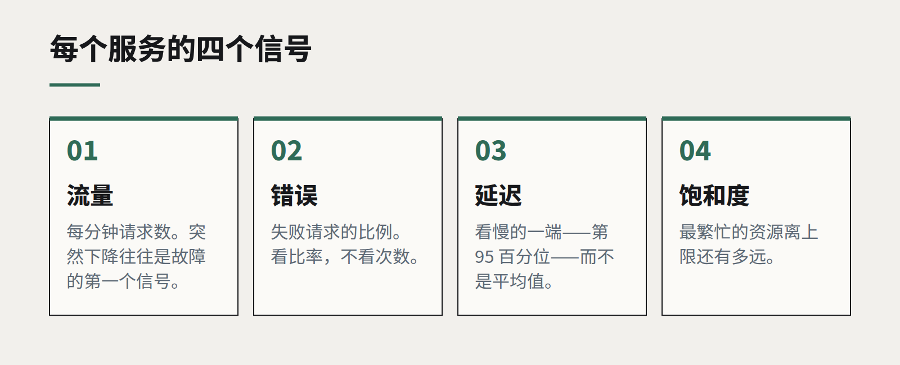

五人团队的可观测性
想知道软件在生产环境里在干什么，并不需要一个平台团队。四个信号、一块看板、一条关于告警的规则，就能覆盖小团队的大部分需求。

可观测性行业是为大型工程组织打造的：横跨数百个服务的分布式追踪、以 PB 计的日志、专门运营这一切的团队。小团队看着那个世界，认定那与自己无关，结果什么都没有——直到客户打电话来说网站从中午起就打不开了。
其实有一个合理的中间地带。一个五人开发团队运行着几个应用，完全可以在一两分钟内知道哪里出了问题、大概在哪里，花费适中的月费和几天的搭建时间。关键就在于四个信号、一块看板，以及关于“什么事情可以把人叫醒”的纪律。
四个信号
对每一个面向用户的服务，测量：
- 流量。 每分钟请求数。突然下降，往往是其他任何手段都没发现的故障的第一个信号。
- 错误。 失败请求的比例。看比率，不看次数。
- 延迟。 请求耗时——看慢的那一端，而不是平均值。第 95 百分位，才是用户感到痛苦的地方。
- 饱和度。 最繁忙的资源离上限还有多远：数据库连接、内存、磁盘、队列深度。
这四个信号有时被称为“黄金信号”，它们回答任何事故中的第一个问题：是不是坏了、对谁坏了、从什么时候开始。

能回答问题的日志
大多数小团队的日志，是写给写这段代码的开发者自己看的非结构化文本。把它们结构化——每个事件一个 JSON 对象，带着一致的字段，比如请求 ID、用户或租户、路由和耗时。把它们发到同一个地方，保留期限根据需求和预算来定。出问题时，你应该能通过一次搜索，找到某个失败请求的全部日志。
当请求跨越超过两三个服务时，就值得加上链路追踪。OpenTelemetry 这样的开放标准意味着，你现在加的埋点，将来换任何工具都能继续用。
一块看板，以及有意义的告警
把每个服务的四个信号放在同一块屏幕上。当有人说“网站感觉有点慢”时，团队打开的就是这块看板。
然后对告警毫不留情。我们的规则是：会把人叫醒的告警，必须意味着此刻有客户受到影响，并且必须写明先检查什么。其他一切——磁盘用了 70%、某个后台任务变慢——都发到一个大家在工作时间查看的频道。什么都报警的团队会学会忽略报警，这比根本没有报警更糟。
也要从外部测量
加一个简单的外部检查：每隔几分钟，从你自己的基础设施之外加载关键页面，并走完一段重要流程——登录、搜索、提交表单。它能抓到内部指标看不见的故障：过期的证书、DNS 配置错误、坏掉的第三方脚本。
从下一次事故开始
如果你今天什么都没有，不要试图一次建好。下一次事故之后，写下哪个问题花了最长时间才回答出来，先给它加上监测。几个月之内，在你真实遇到的问题指引下，缺口会自己慢慢补上。